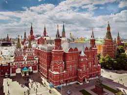
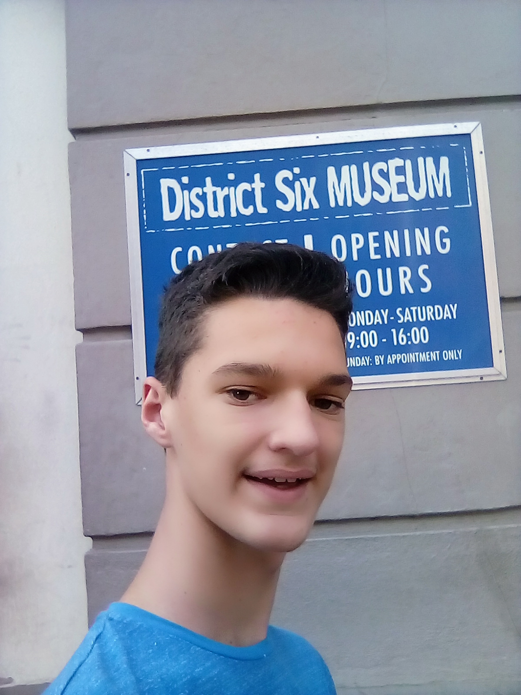
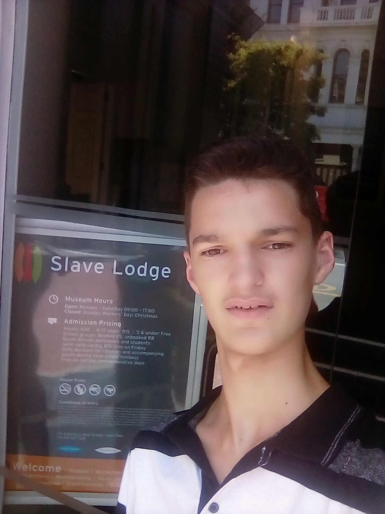

Dylon Curry

Which City?
I would like to visit russia when i get a chance to;Because i want to see
their military exhibition and buy one of those hats that the soviet soldiers wear.

Which foreign language?
I would like to learn Mandarin as it's the most spoken language in the world.
| Mandarin |
English |
| Ni hao |
Hello |
| Ni hao ma |
How are you |
| Ni hao da jia hao |
Hello everyone |
District six museum

- This museum holds alot of information about south africa's past.
- In an effort to preserve the memories of District Six and create a monument
to the thousands of people around the country forcibly relocated under apartheid,
the District Six Museum Foundation was established in 1989.
- The District Six Museum is a heritage project in itself.
City Hall

- The building was designed as the result of a public competition.
- The organ made from mahogany, teak and pine wood.
- The City Hall's carillon was installed as a World War I war memorial,
with 22 additional bells being added in 1925 with the visit of the Prince of Wales.
Slave Lodge

- It is one of the oldest buildings in Cape Town.
- School trips can be arranged here as well as cultural outings.
- The museum unfortunately does not have a shop to buy items from.